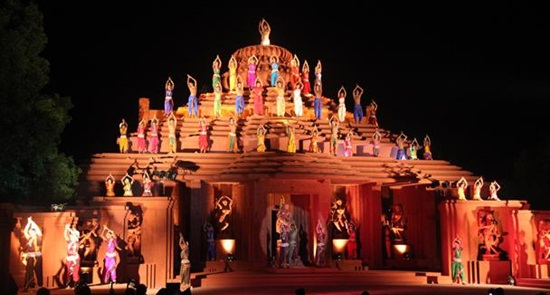
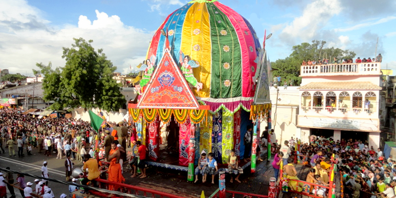
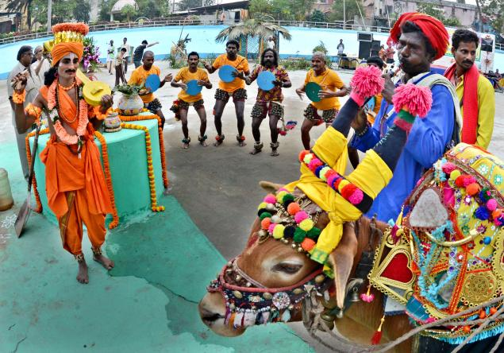
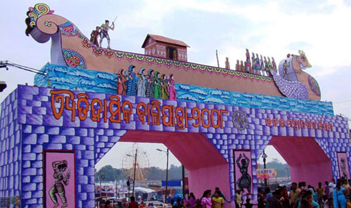

Vasanta Panchami: Vasanta Panchami occurs on the fifth day of the first lunar fortnight of Magha month (Magha Shukla Panchami), which usually falls in January or February. It is also observed as Saraswati Puja . Saraswati is the goddess of knowledge and wisdom in Hinduism. Traditionally, children get their letters on this day. Many educational institutions also observe the festival. It also marks the arrival of spring.Vasant Panchami, also spelled Basant Panchami, is celebrated by people in various ways depending on the region, Vasant is a festival that marks the arrival of spring. The people of the Panjab wear yellow clothes and eat yellow rice to emulate the yellow tatty(sarson) flower fields, or play by flying kites.Vasant Panchami is the Hindu festival that highlights the coming of spring. This festival is usually celebrated in Magh, which is between the months of January and February in Gregorian calendar. It is celebrated in countries such as India.

Dhanu Jatra: Dhanu Jatra is a large-scale reenactment of the reign and death of the asura king Kansa which takes place annually in Bargarh. During the period of 1 to 11 January, the town of Bargarh is assumed to be the mythical city of Mathura. The neighboring settlements also take up names from the Mahabharata. The district collector and police superintendent also pretend to be employees of Kansa. The festival begins with the marriage of Vasudeva and Devaki. Ambapalli village is treated as Gopapur. During the festival, an actor pretending to be Kansa issues social messages which are contrary to mythical character.Dhanu jatra or Dhanu yatra is an annual drama-based open air theatrical performance celebrated in Bargarh, Odisha. Spread across a 6km radius area around the Bargarh municipality, The major one of these is the original one at Bargarh. It is about the episode of Krishna and Balaram's visit to Mathura to witness the Dhanu ceremony organized by their (maternal) uncle Kansa. The plays start with the dethroning of emperor Ugrasena by the angry prince Kansa, over the marriage of his sister Debaki with Basudeba, and ends with death of Kansa, and Ugrasen restoring back to become the king. There is no written script used in these enactments. During this festival Kansa can punish people with penalty for their mistakes. Biju Patnaik, the former chief minister of Odisha was fined once along with his ministers.

Gajalaxmi puja: The history of gajaLaxmi Puja at Dhenkanal is more than 50 years old. The colourful decoration, temporary markets, music & dance programmes etc. are the part of this Puja celebration which continued for 11 days starting from Kumara Purnima. It now becomes a traditional grand yearly celebration in which people from all religions, castes, tribes participate in it. At last a grand combined procession & crackers competition are being organized on the immersion day. Thousands of people not only from Dhenkanal District, but from whole State come to Dhenkanal to enjoy the Laxmi Puja during this festive time. Regional festivals are 3-day gatherings of puppeteers, offering performances, workshops, shared creativity and friendship – the perfect opportunity to meet puppeteers in your area of the country. Regional festivals are like national festivals, but with less of a commitment of time and finances.A festival is a special occasion of feasting or celebration, usually with a religious focus. Aside from religion, and sometimes folklore, another significant origin is agricultural. Food (and consequently agriculture) is so vital that many festivals are associated with harvest time.
Raja parba: The falls in mid June, the first day is called Pahili Raja, second day is Mithuna Sankranti, third day is Bhu daaha or Basi Raja. The final fourth day is called Vasumati snan, in which the ladies bath the grinding stone as a symbol of Bhumi with turmeric paste and adore with flower, sindoor etc. All type of seasonal fruits are offered to mother Bhumi. The day before first day is called Sajabaja or preparatory day during which the house, kitchen including grinding stones are cleaned, spices are ground for three days. During these three days women and girls take rest from work and wear new Saree, Alata, and ornaments.It is similar to Ambubachi Mela. The most popular among numerous festivals in Orissa, Raja[5] is celebrated for three consecutive days. Just as the earth prepares itself to quench its thirst by the incoming rain the unmarried girls of the family are groomed for impending matrimony through this festival. They pass these three days in joyous festivity and observe customs like eating only uncooked and nourishing food especially Podapitha, do not take bath or take salt, do not walk barefoot and vow to give birth to healthy children in future.
|  |  |  |  |